The Dark Side
A first-person horror game set in a looping hallway that changes on every pass, turning a familiar space more unsettling each time through. I made it on my own in Unreal Engine.
- Role
- Solo Developer / Level Designer
- Engine
- Unreal Engine
- Team size
- Solo
- Duration
- Jan – May 2026 (one semester)
- My contributions
- Designed and built every level · implemented the hallway loop and its environment changes · integrated Horror Engine SE's gameplay systems · combined several Fab asset packs into one cohesive look
Overview
The whole game takes place in one hallway. Each time the player walks through it, something has changed: the light, the walls, the rooms behind the doors. The space stays familiar enough that players notice every difference, and that's where the dread comes from.
As the solo developer, I designed and built every level in Unreal Engine, implemented the hallway loop and its environment changes, and integrated Horror Engine SE's gameplay systems. I also combined several asset packs from Fab into a single, cohesive look of my own.
Design goals
- A familiar space that grows less familiar with every loop
- Darkness and single light sources to pace the tension
- Clues hidden in the environment to drive the puzzles
Building one reusable space
Because the player passes through the same space again and again, the layout had to be compact and easy to rearrange. I built the hallway and its connected rooms as one level, then swapped lighting, materials, and props between passes.
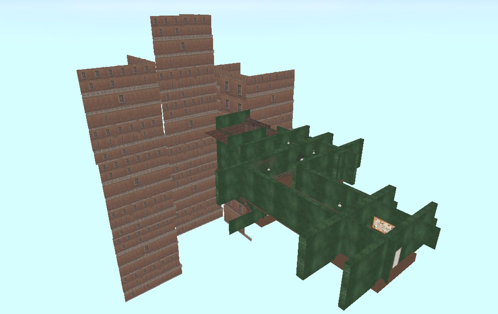
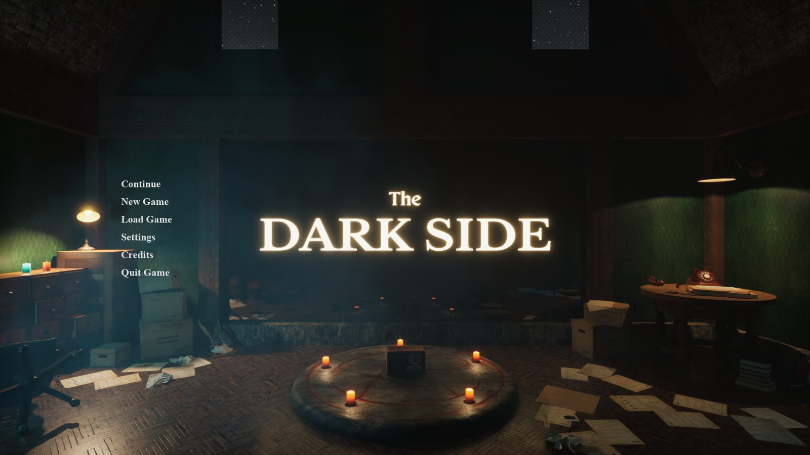
The loop, pass by pass
These screenshots follow one playthrough in order. The early passes alternate a dark hallway with a warm, detailed study. With each loop the hallway gets darker and the rooms get stranger, until the walls turn red and the clues lead to the final door.
Early passes
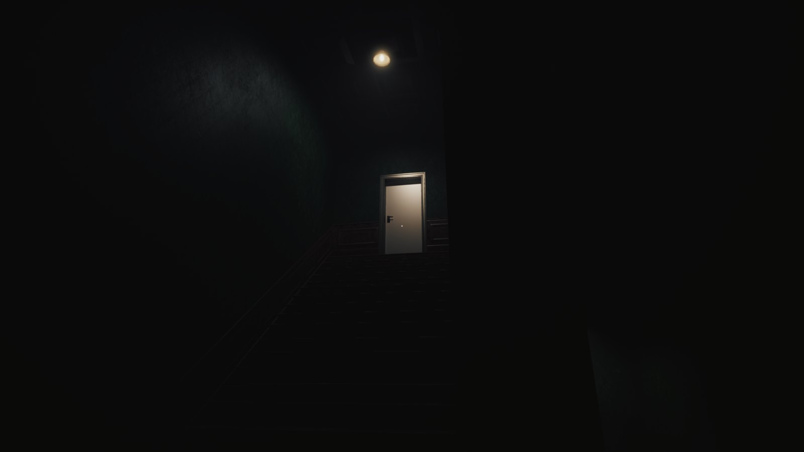
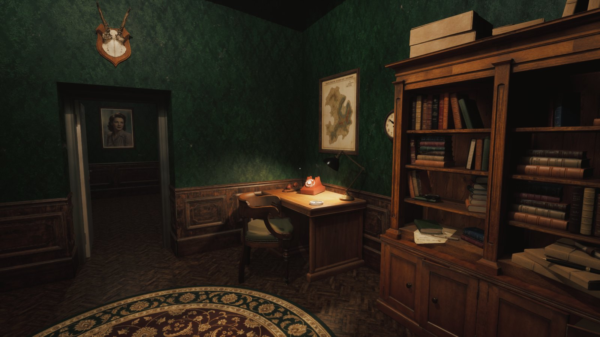
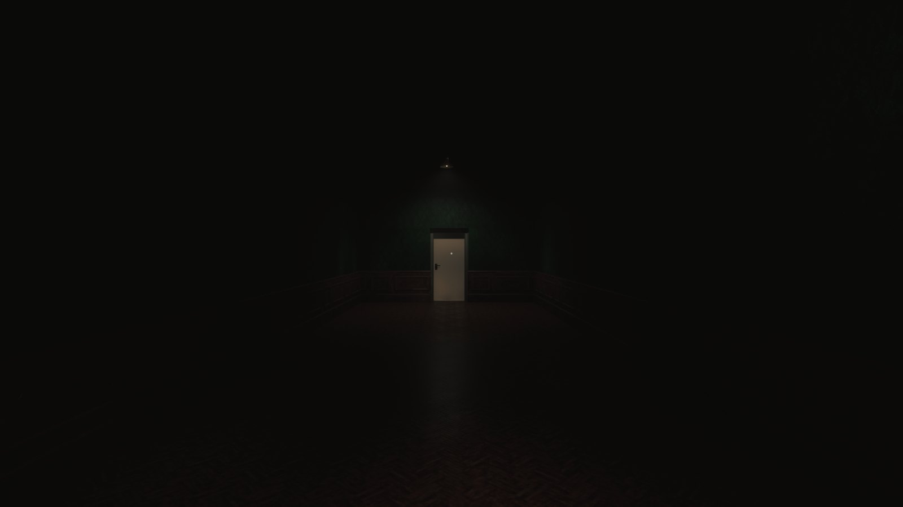
Things start to change
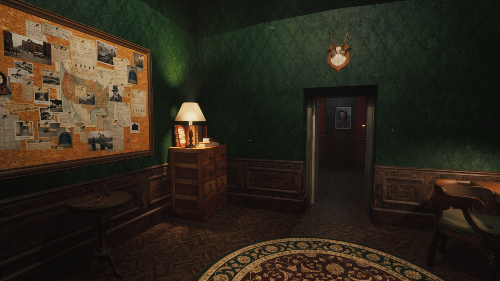
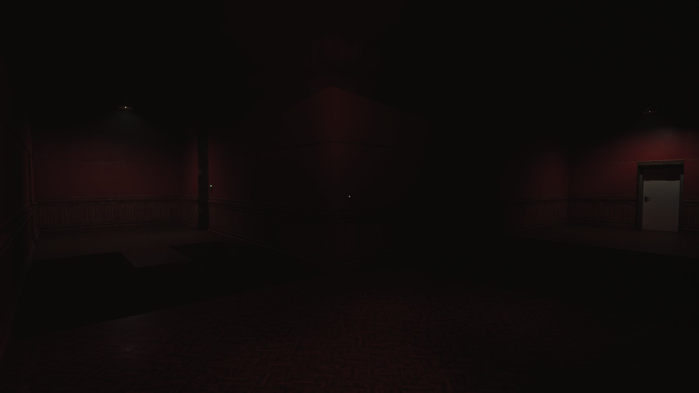
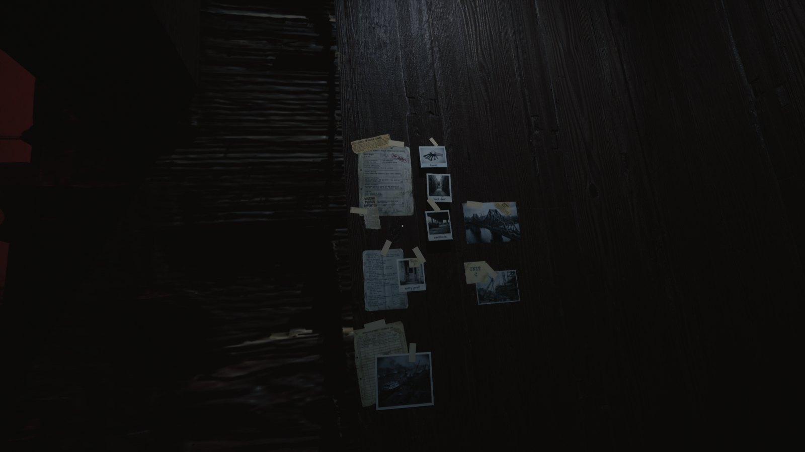
The way out
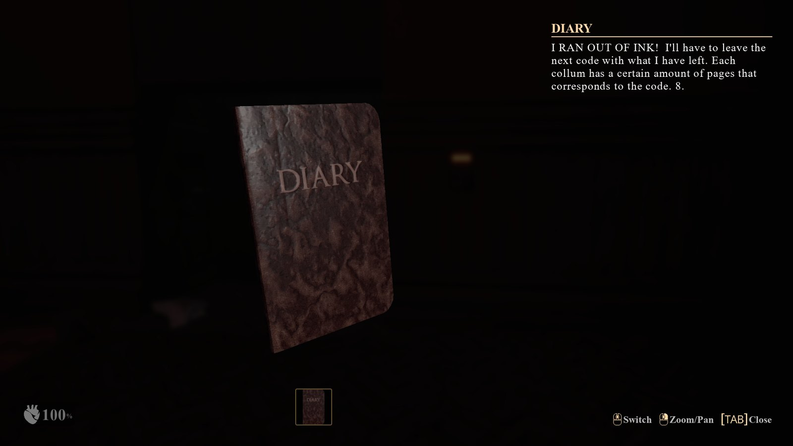
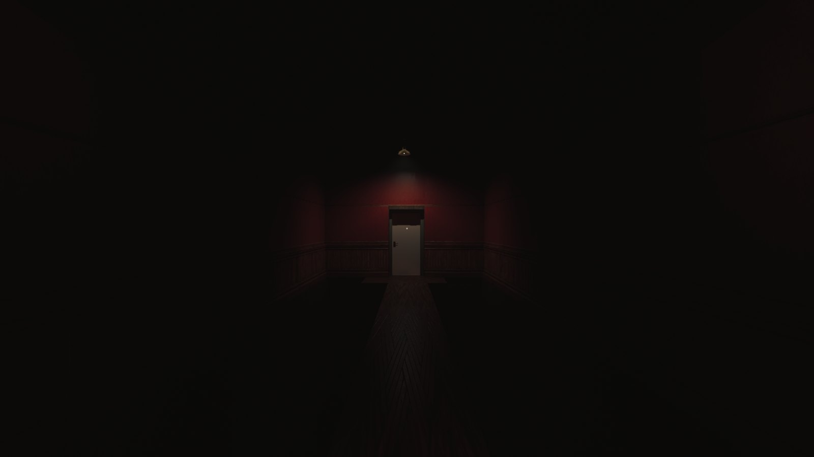
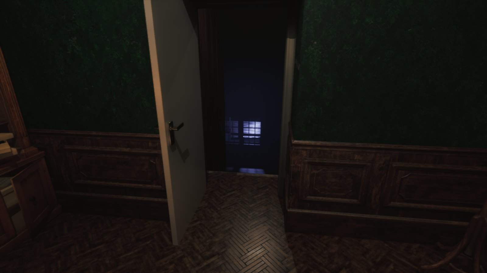
What I learned
- A small space can carry a whole game. Pacing and environmental changes build tension even inside one reusable hallway.
- Make the framework serve the design. I adapted Horror Engine SE to support my own level design instead of designing around its defaults.
- Scope is a design decision. Handling every part of development taught me to build the essential features first.
Time spent
One full semester, January–May 2026, working solo.